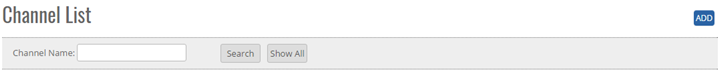
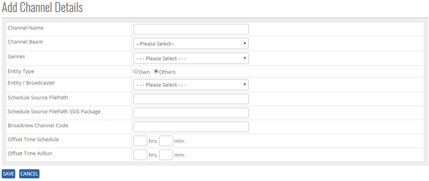
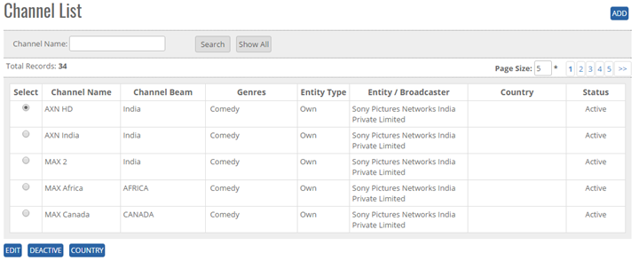


	<section>
		<article>
			<h2>Channel<span></span></h2>
			<div>
				<p></p>
				

				<p>Channel comes under Commercial Module. It can be accessed by user who has rights for this module.</p>

				<p><b>ADD New Channel:</b></p>

				<p>Click Add Button on top right corner of the page and the following page will open. </p>

				<div class="triangle-border top">
					
				</div>


				<p><b>To Add Channel list in the system, system will have following fields</b></p>

				<p>- User will enter Channel name in Text Box (alphanumeric is valid)</p>

				<p>- User will enter Channel Beam from list box</p>

				<p>- User will select Genres from the List Box</p>

				<p>- User will select Entity Type, Radio button (as option) "Own" Or "Others" </p>

				<p>- User will select the Entity/Broadcast from the list page</p>

				<p>- User will select Broad view Channel code (Only Numeric is valid)</p>

				<p>- User will add the Off-set Time (hours and min) in Schedule/Run </p>

				<p>- User can add path (From where the file has updated or taken) for Schedule Source File path and SSIS Package</p> 

				<p>In below image, we can see the <b>Save</b> and <b>Cancel</b> button.</p>

				<div class="triangle-border top">
					
				</div>

				<p><b>Note:</b> By default Channel status will show ACTIVE </p>

				<p>Click on <b>Save</b> button user will get alert message <b>"Record Added successfully"</b>. Click on Cancel Button, the Record will not get updated.</p>

				<p><b>Note:</b> Channel Name will be Unique in the system.</p>


				<p><b>Modifying Existing Channel</b></p>

				<p>The user who has right to edit can edit the existing Channel list</p> 

				<p>Go To>>Master>>Commercial>>Channel>>Search Channel>>Click Radio Button (Channel Name)>><b>EDIT</b></p>

				<div class="triangle-border top">
					
				</div>

				<p>System will allow to edit all the fields as shown in above image </p>

				<p>Click on <b>Update</b> user will get alert message <b>"Record Updated successfully"</b>. Click on <b>Cancel</b> button the record will not get updated.</p>


				<p><b>Deactivate/ Activate Existing Channel</b> </p>

				<p><b>DeActive</b> - Click on Deactivate Button, once the button is clicked it will ask confirmation message "Are you sure you want to Deactivate this record" with "OK and cancel" button.</p>

				<p>If user clicks on OK Button, record will get deactivated and if clicked on Cancel, record will not get deactivated.</p>

				<p><b>Active</b> - Same way once a record is deactivated, system will show Active button. If user clicks on Active button, record will get activated.</p>


				<p><b>Search / Show All Criteria</b></p>

				<p>- User can search the Channel name and then click on <b>Search</b>, it will show the result as per the search criteria. User can search name by single alphabet.</p>

				<p>- If user want to check all Channel name then click on <b>Show All</b> Button. It will show the list.</p>
				 
				<p>- Click on page no, System will navigate the desired page, per page 10 records will be displayed.</p>
			</div>
		</article>
	</section>
	